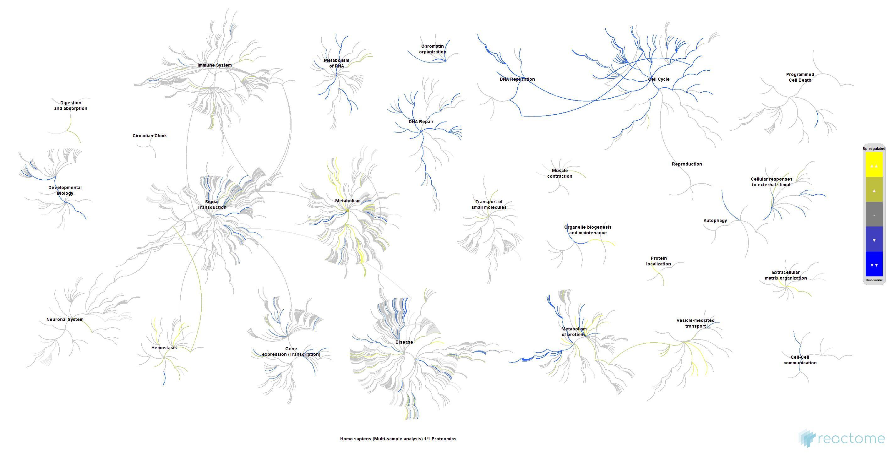
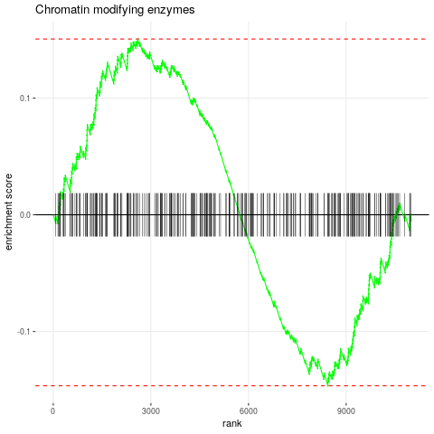

Functional Enrichment Analysis
8 minute read
Introduction
The following introduces gene and protein annotation systems that are widely used for functional enrichment analysis (FEA). These include among many other annotation systems: Gene Ontology (GO), Disease Ontology (DO) and pathway annotations, such as KEGG and Reactome. Examples of widely used statistical enrichment methods are introduced as well. These statistical FEA methods assess whether functional annotation terms are over-represented in a query gene set. In case of so called over-represention analysis (ORA) methods, such as Fisher’s exact and hypergeometric distribution tests, the query is usually a list of unranked gene identifiers (Falcon and Gentleman 2007). In contrast to this, Gene Set Enrichment Analysis (GSEA) algorithms use as query a score ranked lists (e.g. all genes profiled by an assay) and assess whether annotation categories are more highly enriched among the highest ranking genes compared to random rankings (Subramanian et al. 2005; Sergushichev 2016; Duan et al. 2020). The sets in both the query and the annotation databases can be composed of genes, proteins, compounds or other factors. For simplicity, the term gene sets is used throughtout this text.
Functional Annotations Systems
This section introduces a small selection of functional annotation systems, largely provided by Bioconductor packages. This includes code to inspect how the annotations are organized and how to access them.
Gene Ontology DB
GO.db is a data package that stores the GO term information from the GO
consortium in an SQLite database. Several accessor functions are provided to
query the database. Organism specific gene to GO annotations are provied by
organism data packages and/or Bioconductor’s
AnntationHub.
The following provide sample code for using GO.db as well as a organism
database example.
## Load GOstats library
library(GOstats); library(GO.db)
## Print complete GO term information for "GO:0003700"
GOTERM$"GO:0003700"
## Print parent and children terms for a GO ID
GOMFPARENTS$"GO:0003700"; GOMFCHILDREN$"GO:0003700"
## Print complete lineages of parents and children for a GO ID
GOMFANCESTOR$"GO:0003700"; GOMFOFFSPRING$"GO:0003700"
## Print number of GO terms in each of the 3 ontologies
zz <- eapply(GOTERM, function(x) x@Ontology); table(unlist(zz))
## Gene to GO mappings for an organism (here Arabidopsis)
library(org.At.tair.db) # For human use org.Hs.eg.db
xx <- as.list(org.At.tairGO2ALLTAIRS)
Pathway DBs
KEGG
KEGG.db
The following load_keggList function returns the pathway annotations from the KEGG.db package for a species selected
under the org argument (e.g. hsa, ath, dme, mmu, …). The resulting list object can be used
for ORA or GSEA methods, e.g. by fgsea.
## Define function to create KEGG pathway list db
load_keggList <- function(org="ath") {
suppressMessages(suppressWarnings(library(KEGG.db)))
kegg_gene_list <- as.list(KEGGPATHID2EXTID) # All organisms in kegg
kegg_gene_list <- kegg_gene_list[grepl(org, names(kegg_gene_list))] # Only human
kegg_name_list <- unlist(as.list(KEGGPATHID2NAME)) # All organisms in kegg
kegg_name_list <- kegg_name_list[gsub(paste0("^", org), "", names(kegg_gene_list))]
names(kegg_gene_list) <- paste0(names(kegg_gene_list), " (", names(kegg_name_list), ") - ", kegg_name_list)
return(kegg_gene_list)
}
## Usage:
keggdb <- load_keggList(org="ath") # org can be: hsa, ath, dme, mmu, ...
Additional packages for KEGG pathways:
- pathview: plotting pathways with quantitative information embedded
- KEGGREST: access via KEGG REST API
- Many additional packages can be found under Bioc’s KEGG View page here
Reactome
reactome.db
The following load_reacList function returns the pathway annotations from the reactome.db
package for a species selected under the org argument (e.g. R-HSA, R-MMU, R-DME, R-CEL, …).
The resulting list object can be used for various ORA or GSEA methods, e.g. by fgsea.
## Define function to create Reactome pathway list db
load_reacList <- function(org="R-HSA") {
library(reactome.db)
reac_gene_list <- as.list(reactomePATHID2EXTID) # All organisms in reactome
reac_gene_list <- reac_gene_list[grepl(org, names(reac_gene_list))] # Only human
reac_name_list <- unlist(as.list(reactomePATHID2NAME)) # All organisms in reactome
reac_name_list <- reac_name_list[names(reac_gene_list)]
names(reac_gene_list) <- paste0(names(reac_gene_list), " (", names(reac_name_list), ") - ", gsub("^.*: ", "", reac_name_list))
return(reac_gene_list)
}
## Usage:
reacdb <- load_reacList(org="R-HSA")
A very useful query interface for Reactome is the ReactomeContentService4R package.
Its vignette provides many useful examples, see here.
A sample plot from ReactomeContentService4R is shown below. For metabolite (set) enrichment analysis (MEA/MSEA) users might also be interested in the
MetaboAnalystR package that interfaces with the MataboAnalyst web service.

Figure 1: Fireworks plot depicting genome-wide view of reactome pathways.
Functional Enrichment Analysis Methods
Over-representation analysis (ORA)
GOstats Package
The GOstats package allows testing for both over and under representation of GO terms using
either the standard Hypergeometric test or a conditional Hypergeometric test that uses the
relationships among the GO terms for conditioning (Falcon and Gentleman 2007).
## Load required packages
library(GOstats); library(GO.db); library(org.At.tair.db)
## Define universe and test sample set
geneUniverse <- keys(org.At.tairGENENAME)
geneSample <- c("AT2G46210", "AT2G19880", "AT2G38910", "AT5G25140", "AT2G44525")
## Generate params object
params <- new("GOHyperGParams", geneIds = geneSample,
universeGeneIds = geneUniverse,
annotation="org.At.tair", ontology = "MF", pvalueCutoff = 0.5,
conditional = FALSE, testDirection = "over")
## Run enrichment test
hgOver <- hyperGTest(params)
## Viewing of results
summary(hgOver)[1:4,]
htmlReport(hgOver, file = "MyhyperGresult.html") # html file will be written to current working directory
GOHyperGAll and GOCluster_Report
The following introduceds a GOCluster_Report convenience function from the
systemPipeR package. The first part shows how to generate the proper catdb
lookup data structure for any organism supported by BioMart (H Backman and Girke 2016).
This more time consuming step needs to be performed only once.
## Create a custom genome-to-GO lookup table for enrichment testing
library(systemPipeR); library(biomaRt)
listMarts() # To choose BioMart database
listMarts(host = "plants.ensembl.org")
## Obtain annotations from BioMart
listMarts() # To choose BioMart database
m <- useMart("plants_mart", host = "plants.ensembl.org")
listDatasets(m)
m <- useMart("plants_mart", dataset = "athaliana_eg_gene", host = "plants.ensembl.org")
listAttributes(m) # Choose data types you want to download
go <- getBM(attributes = c("go_id", "tair_locus", "namespace_1003"), mart = m)
go <- go[go[, 3] != "", ]; go[, 3] <- as.character(go[, 3])
go[go[, 3] == "molecular_function", 3] <- "F"; go[go[, 3] == "biological_process", 3] <- "P"; go[go[, 3] == "cellular_component", 3] <- "C"
go[1:4, ]
dir.create("./GO")
write.table(go, "GO/GOannotationsBiomart_mod.txt", quote = FALSE, row.names = FALSE, col.names = FALSE, sep = "\t")
catdb <- makeCATdb(myfile = "GO/GOannotationsBiomart_mod.txt", lib = NULL, org = "", colno = c(1, 2, 3), idconv = NULL)
save(catdb, file="GO/catdb.RData")
For the actual enrichment analysis one can load the catdb object from the
corresponding file, and then perform batch GO term analysis where the results
include all terms meeting a user-provided P-value cutoff as well as GO Slim
terms.
## Next time catDB can be loaded from file
load("GO/catdb.RData")
## Perform enrichment test on single gene set
geneids <- unique(as.character(catmap(catdb)$D_MF[,"GeneID"]))
gene_set_list <- sapply(c("Set1", "Set2", "Set3"), function(x) sample(geneids, 100), simplify=FALSE)
GOHyperGAll(catdb=catdb, gocat="MF", sample=gene_set_list[[1]], Nannot=2)[1:20,]
## Batch analysis of many gene sets for all and slim terms
goall <- GOCluster_Report(catdb=catdb, setlist=gene_set_list, method="all", id_type="gene", CLSZ=2, cutoff=0.01, gocats=c("MF", "BP", "CC"), recordSpecGO = NULL)
## GO Slim analysis by subsetting enrichment results accordingly
m <- useMart("plants_mart", dataset = "athaliana_eg_gene", host = "plants.ensembl.org")
goslimvec <- as.character(getBM(attributes = c("goslim_goa_accession"), mart = m)[, 1])
goslim <- GOCluster_Report(catdb=catdb, setlist=gene_set_list, method="slim",id_type="gene", myslimv=goslimvec, CLSZ=2, cutoff=0.01, gocats = c("MF", "BP", "CC"), recordSpecGO = NULL)
## Plot 'GOBatchResult' as bar plot
goBarplot(goslim, gocat="MF")
Figure 2: Batch ORA result of GO slim terms using 3 test gene sets.
Set enrichment analysis (SEA)
fgsea Package
The fgsea function performs gene set enrichment analysis (GSEA) on a score ranked
gene list (Sergushichev 2016). Compared to other GESA implementations, fgsea is very fast. Its P-value
estimation is based on an adaptive multi-level split Monte-Carlo scheme. In addition
to its speed, it is very flexible in adopting custom annotation systems since it
stores the gene-to-category annotations in a simple list object that is easy to create. The
following uses the keegdb and reacdb lists created above as annotation systems.
## Load packages and create sample ranked gene list
library(fgsea); library(data.table); library(ggplot2); library(org.At.tair.db)
set.seed(42)
## fgsea with KEGG (Arabidopsis)
geneids <- mappedkeys(org.At.tairCHR)
exampleRanks <- sort(setNames(sample(seq(-100,100, by=0.001), length(geneids)), geneids))
fgseaResKegg <- fgsea(pathways=keggdb, stats=exampleRanks, minSize=15, maxSize=500)
head(fgseaResKegg[order(pval), ])
plotEnrichment(keggdb[["ath00052 (00052) - Galactose metabolism"]], exampleRanks) + labs(title="Galactose metabolism")
## fgsea with Reactome (Human)
geneids <- unique(as.character(unlist(reacdb)))
exampleRanks <- sort(setNames(sample(seq(-100,100, by=0.001), length(geneids)), geneids))
fgseaResReac <- fgsea(pathways=reacdb, stats=exampleRanks, minSize=15, maxSize=500)
head(fgseaResReac[order(pval), ])
plotEnrichment(reacdb[["R-HSA-3247509 (R-HSA-3247509) - Chromatin modifying enzymes"]], exampleRanks) + labs(title="Chromatin modifying enzymes")
The plotEnrichment can be used to create enrichment plots. Additional examples are available
in the vignette of the fgsea package here.

Figure 3: Enrichment plot for selected pathway.
Version Information
sessionInfo()
## R version 4.0.5 (2021-03-31)
## Platform: x86_64-pc-linux-gnu (64-bit)
## Running under: Debian GNU/Linux 10 (buster)
##
## Matrix products: default
## BLAS: /usr/lib/x86_64-linux-gnu/blas/libblas.so.3.8.0
## LAPACK: /usr/lib/x86_64-linux-gnu/lapack/liblapack.so.3.8.0
##
## locale:
## [1] LC_CTYPE=en_US.UTF-8 LC_NUMERIC=C LC_TIME=en_US.UTF-8
## [4] LC_COLLATE=en_US.UTF-8 LC_MONETARY=en_US.UTF-8 LC_MESSAGES=en_US.UTF-8
## [7] LC_PAPER=en_US.UTF-8 LC_NAME=C LC_ADDRESS=C
## [10] LC_TELEPHONE=C LC_MEASUREMENT=en_US.UTF-8 LC_IDENTIFICATION=C
##
## attached base packages:
## [1] stats graphics grDevices utils datasets methods base
##
## other attached packages:
## [1] fgsea_1.16.0 ggplot2_3.3.2 BiocStyle_2.18.0
##
## loaded via a namespace (and not attached):
## [1] Rcpp_1.0.5 bslib_0.2.4 compiler_4.0.5 pillar_1.4.7
## [5] BiocManager_1.30.10 jquerylib_0.1.3 tools_4.0.5 digest_0.6.27
## [9] lattice_0.20-41 jsonlite_1.7.1 evaluate_0.14 lifecycle_0.2.0
## [13] tibble_3.0.4 gtable_0.3.0 pkgconfig_2.0.3 rlang_0.4.8
## [17] Matrix_1.3-2 fastmatch_1.1-0 parallel_4.0.5 yaml_2.2.1
## [21] blogdown_1.2 xfun_0.22 gridExtra_2.3 withr_2.3.0
## [25] stringr_1.4.0 dplyr_1.0.2 knitr_1.30 generics_0.1.0
## [29] sass_0.3.1 vctrs_0.3.5 grid_4.0.5 tidyselect_1.1.0
## [33] data.table_1.13.2 glue_1.4.2 R6_2.5.0 BiocParallel_1.24.1
## [37] rmarkdown_2.7 bookdown_0.21 purrr_0.3.4 magrittr_2.0.1
## [41] codetools_0.2-18 scales_1.1.1 htmltools_0.5.1.1 ellipsis_0.3.1
## [45] colorspace_2.0-0 stringi_1.5.3 munsell_0.5.0 crayon_1.3.4
References
Duan, Yuzhu, Daniel S Evans, Richard A Miller, Nicholas J Schork, Steven R Cummings, and Thomas Girke. 2020. “signatureSearch: environment for gene expression signature searching and functional interpretation.” Nucleic Acids Res., October. https://doi.org/10.1093/nar/gkaa878.
Falcon, S, and R Gentleman. 2007. “Using GOstats to test gene lists for GO term association.” Bioinformatics 23 (2): 257–58. https://doi.org/10.1093/bioinformatics/btl567.
H Backman, Tyler W, and Thomas Girke. 2016. “systemPipeR: NGS workflow and report generation environment.” BMC Bioinformatics 17 (September): 388. https://doi.org/10.1186/s12859-016-1241-0.
Sergushichev, Alexey. 2016. “An algorithm for fast preranked gene set enrichment analysis using cumulative statistic calculation.” bioRxiv. https://doi.org/10.1101/060012.
Subramanian, A, P Tamayo, V K Mootha, S Mukherjee, B L Ebert, M A Gillette, A Paulovich, et al. 2005. “Gene set enrichment analysis: a knowledge-based approach for interpreting genome-wide expression profiles.” Proc. Natl. Acad. Sci. U. S. A. 102 (43): 15545–50. https://doi.org/10.1073/pnas.0506580102.